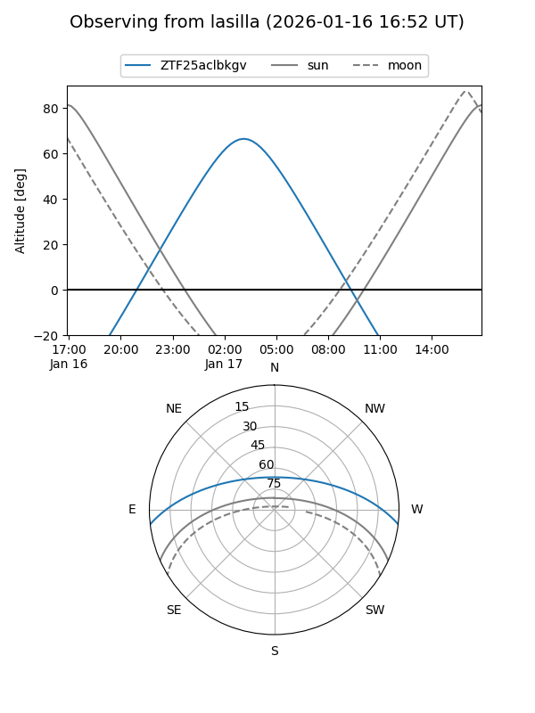
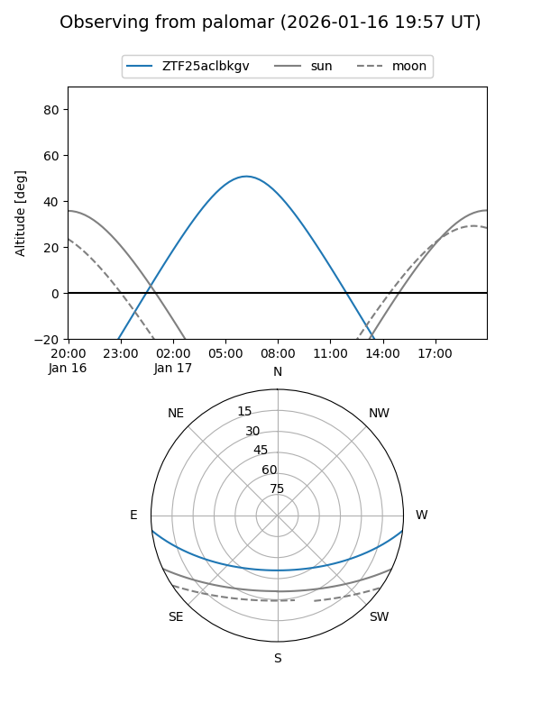

ZTF25aclbkgv
Target ZTF25aclbkgv at 2026-01-15 09:45
Aliases and brokers:
FINK: link
Lasair: link
ALeRCE: link
alt names
ZTF25aclbkgv (ztf,fink_ztf)
Coordinates:
equatorial (ra, dec) = 92.3128,-5.78298
equatorial (HMS+DMS) = 06:09:15.08,-05:46:58.72
galactic (l, b) = (213.3208,-12.00613)
Flags:
Photometry:
last ztfr=19.07
2 ztfr detections
Lightcurve

Visibility


Additional plots